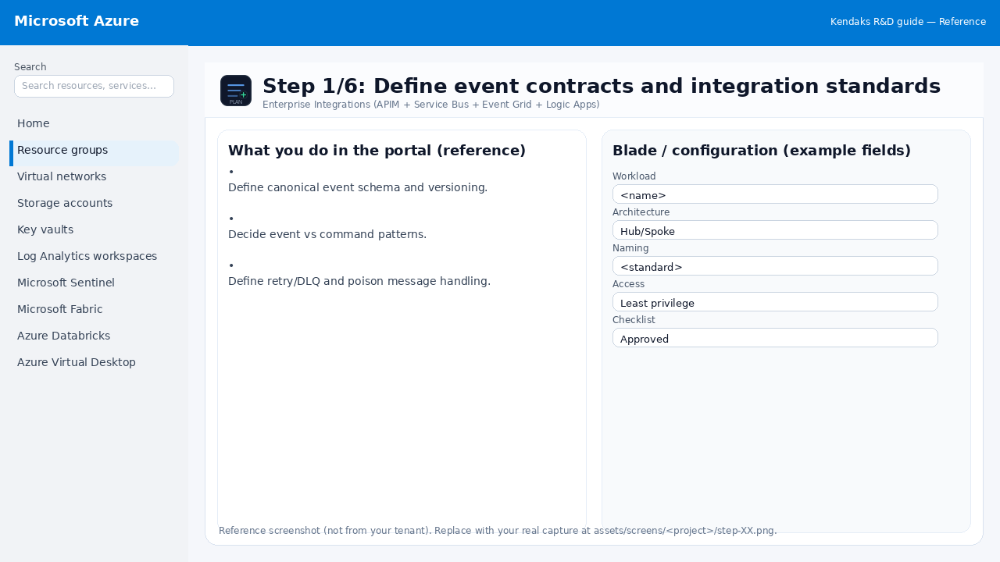
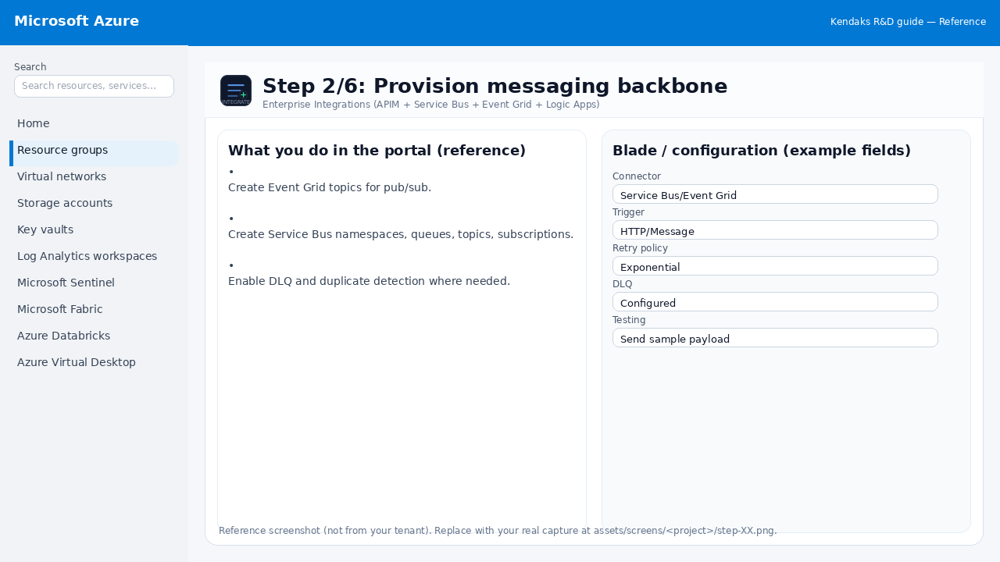
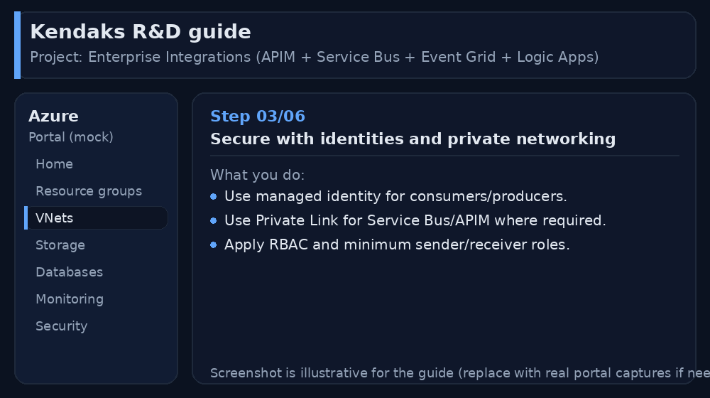
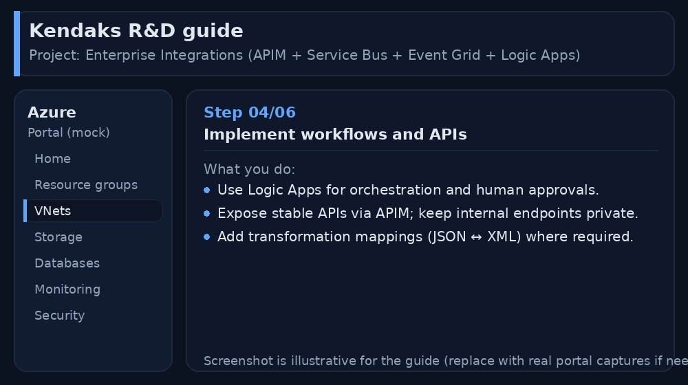

Enterprise Integrations (APIM + Service Bus + Event Grid + Logic Apps)
Category: Integration
Scenario: Multiple internal apps must exchange events reliably. Example: 'Kendaks Platform' standardizes integrations for onboarding/offboarding and billing events.
Architecture diagram
High-level view of the main components and data/control flows.
Low-level architecture diagram (Visio-style)
Implementation view (networking, security, ops). Click to open full size.
Low-level architecture details
(No low-level text provided.)
Step-by-step implementation
Step 1/6

Define event contracts and integration standards

Reference portal screenshot (click to zoom). Replace with your tenant capture if needed.
- Define canonical event schema and versioning.
- Decide event vs command patterns.
- Define retry/DLQ and poison message handling.
Validation checklist
- Stakeholders have signed off the scope, SLAs, and data/security requirements.
- You have documented naming standards, environments, and ownership (RACI).
Step 2/6

Provision messaging backbone

Reference portal screenshot (click to zoom). Replace with your tenant capture if needed.
- Create Event Grid topics for pub/sub.
- Create Service Bus namespaces, queues, topics, subscriptions.
- Enable DLQ and duplicate detection where needed.
Validation checklist
- Connections/authentication succeed and test messages/records flow through.
- Retries/DLQ/error handling are configured and validated with a forced failure.
Step 3/6

Secure with identities and private networking

Reference portal screenshot (click to zoom). Replace with your tenant capture if needed.
- Use managed identity for consumers/producers.
- Use Private Link for Service Bus/APIM where required.
- Apply RBAC and minimum sender/receiver roles.
Validation checklist
- Security baseline applied (Defender/Policy/WAF/Firewall rules as applicable).
- No public endpoints unless explicitly approved; private endpoints verified where applicable.
- Alerts are configured for high-risk events.
Step 4/6

Implement workflows and APIs

Reference portal screenshot (click to zoom). Replace with your tenant capture if needed.
- Use Logic Apps for orchestration and human approvals.
- Expose stable APIs via APIM; keep internal endpoints private.
- Add transformation mappings (JSON ↔ XML) where required.
Validation checklist
- Deployment completed; smoke tests passed; rollback plan confirmed.
Step 5/6

Observability
 Reference portal screenshot (click to zoom). Replace with your tenant capture if needed.
Reference portal screenshot (click to zoom). Replace with your tenant capture if needed.
- Centralize logs to Log Analytics.
- Track message throughput, DLQ depth, and latency.
- Create dashboards for business KPIs (events processed).
Validation checklist
- Logs and metrics are flowing (check Log Analytics / Monitor).
- Alerts trigger correctly (test alert path to email/Teams/ITSM).
Step 6/6

Resilience testing
 Reference portal screenshot (click to zoom). Replace with your tenant capture if needed.
Reference portal screenshot (click to zoom). Replace with your tenant capture if needed.
- Chaos test: drop consumers, verify DLQ and retries.
- Load test API gateways and queues.
- Validate schema evolution and backward compatibility.
Validation checklist
- UAT completed with representative users and scenarios.
- Performance meets baseline; issues tracked and remediated.